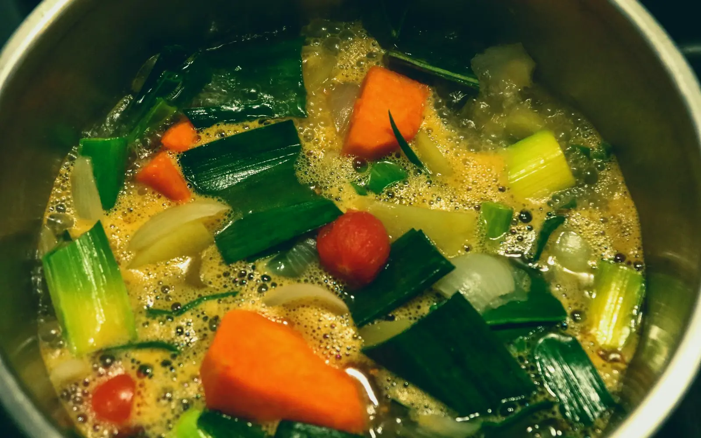
17 recipes
Healthy & Light
Fresh, bright and easy on the stomach.
Pick one and start cooking.
01
Healthy & Light
17 recipesSopa de Quinoa40 min · Easy Falafel30 min · Medium
Falafel30 min · Medium Three Sisters Stew, Corn Bean Squash50 min · Easy
Three Sisters Stew, Corn Bean Squash50 min · Easy
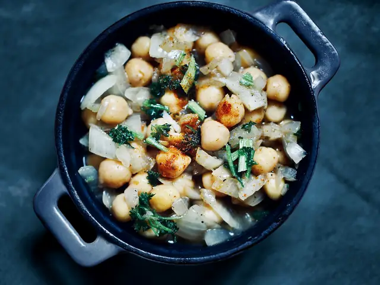
Tunisian Lablabi50 min · Easy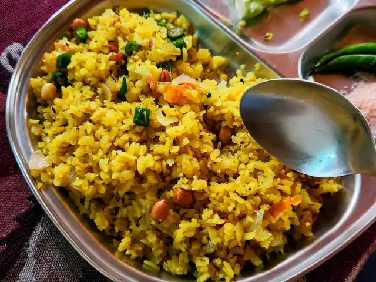
Poha20 min · Easy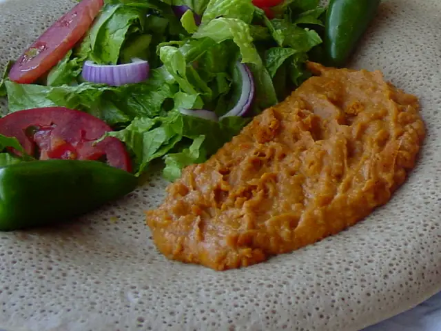
Shiro Wat, Ethiopian Chickpea Stew35 min · Easy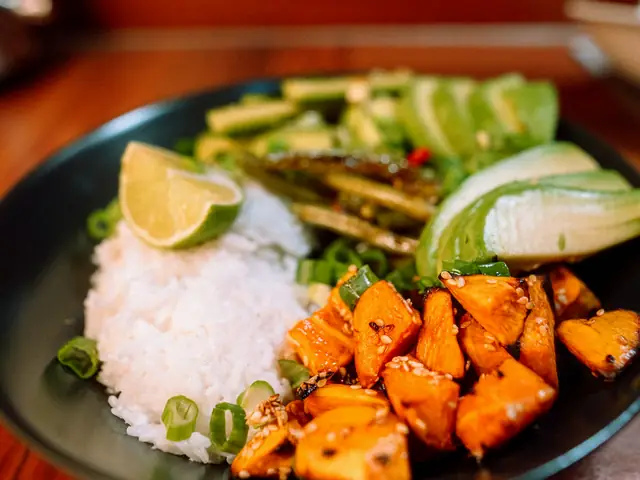
Sweet Potato and Coconut Bowl35 min · EasyIdli Sambar60 min · Medium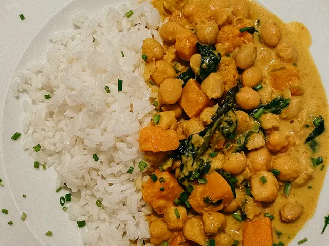
Kumara and Chickpea Curry40 min · Easy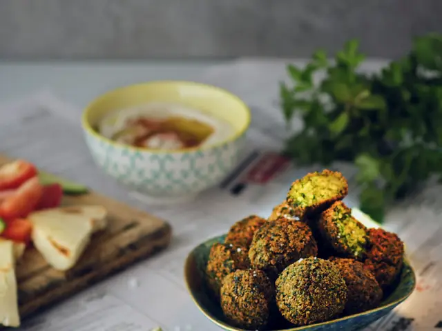
Taameya, Egyptian Falafel40 min · Medium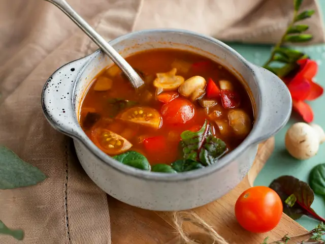
Minestrone45 min · Easy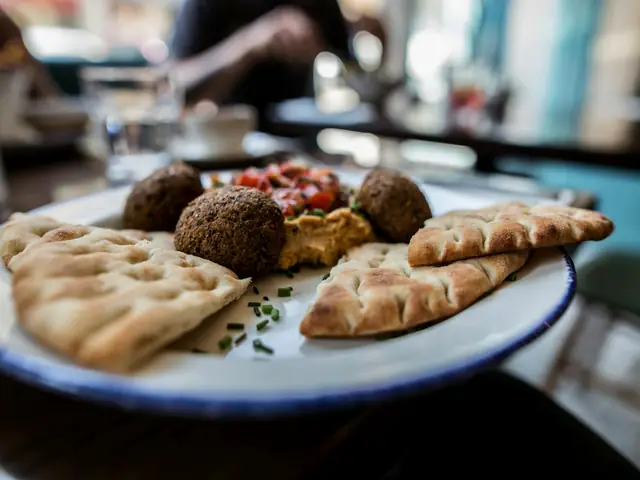
Falafel with Pita and Hummus45 min · MediumFalafel30 min · MediumThree Sisters Stew, Corn Bean Squash50 min · Easy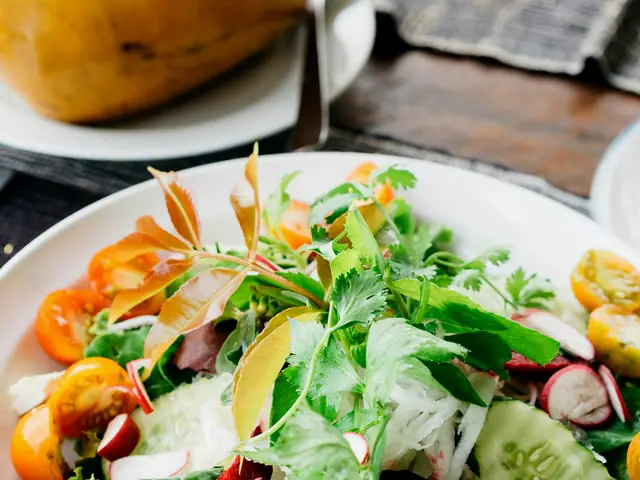
Kokoda, Vegetarian Version25 min · Easy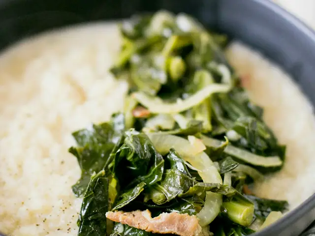
Sukuma Wiki with Beans30 min · EasyFrench Onion Soup75 min · Medium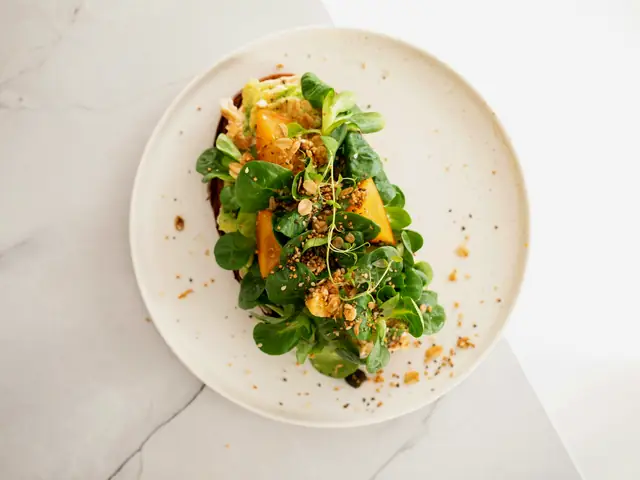
Roast Pumpkin and Feta Salad40 min · Easy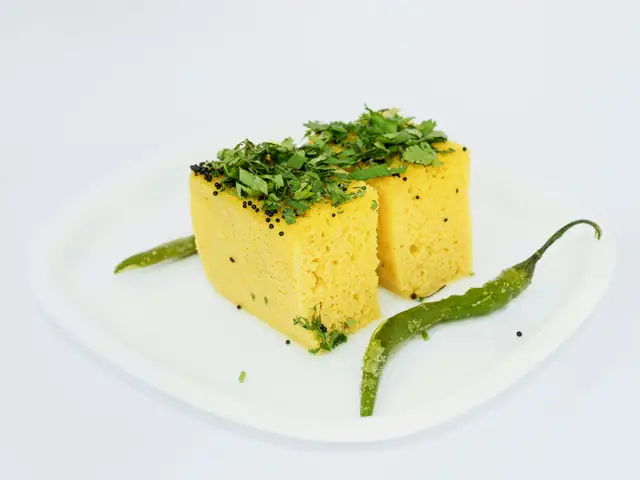
Dhokla35 min · Medium